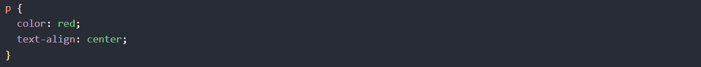
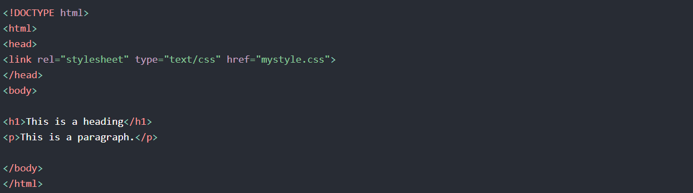
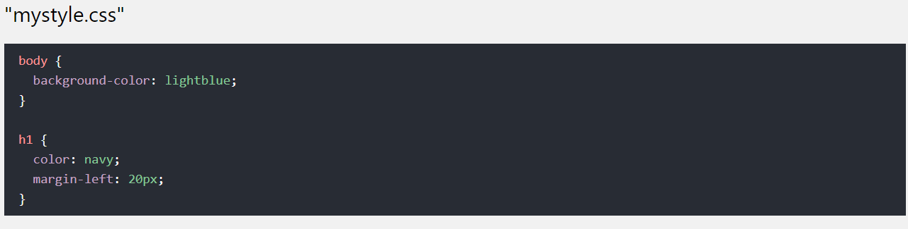
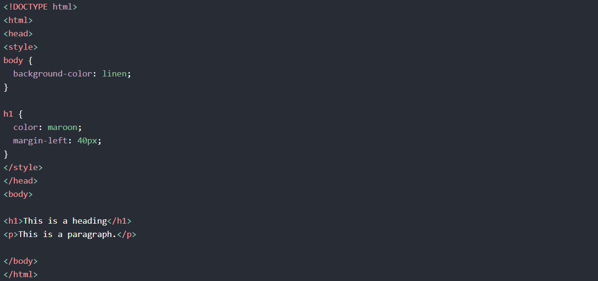
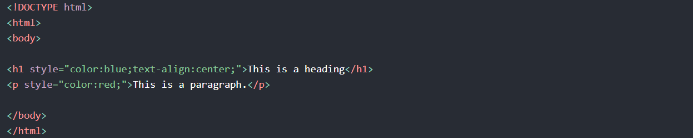

CSS describes how HTML elements are to be displayed on screen, paper, or in other media
CSS saves a lot of work. It can control the layout of multiple web pages all at once
External stylesheets are stored in CSS files
Why Use CSS?
CSS is used to define styles for your web pages, including the design, layout and
variations in display for different devices and screen sizes.
CSS Example
CSS Solved a Big Problem
HTML was NEVER intended to contain tags for formatting a web page!
HTML was created to describe the content of a web page, like:
<h1>This is a heading</h1>
<p>This is a paragraph.</p>
When tags like <font>, and color attributes were added to the HTML 3.2 specification, it started
a nightmare for web developers. Development of large websites, where fonts and color information
were added to every single page, became a long and expensive process.
To solve this problem, the World Wide Web Consortium (W3C) created CSS.
CSS removed the style formatting from the HTML page!
CSS Saves a Lot of Work!
The style definitions are normally saved in external .css files.
With an external stylesheet file, you can change the look of an entire website by changing just one file!
CSS Syntax
A CSS rule-set consists of a selector and a declaration block:
The selector points to the HTML element you want to style.
The declaration block contains one or more declarations separated by semicolons.
Each declaration includes a CSS property name and a value, separated by a colon.
Multiple CSS declarations are separated with semicolons, and declaration blocks are surrounded by curly braces.
Example
In this example all elements will be center-aligned, with a red text color:

Example Explained
p is a selector in CSS (it points to the HTML element you want to style: <p>).
color is a property, and red is the property value
text-align is a property, and center is the property value
How to add CSS
When a browser reads a style sheet, it will format the HTML document according to the information in the style sheet.
Three Ways to Insert CSS
There are three ways of inserting a style sheet:
External CSS
Internal CSS
Inline CSS
External CSS
With an external style sheet, you can change the look of an entire website by changing just one file!
Each HTML page must include a reference to the external style sheet file inside the element, inside the head section.
Example
External styles are defined within the element, inside the
section of an HTML page:

An external style sheet can be written in any text editor, and must be saved with a .css extension.
The external .css file should not contain any HTML tags.
Here is how the "mystyle.css" file looks like:

Internal CSS
An internal style sheet may be used if one single HTML page has a unique style.
The internal style is defined inside the <style> element, inside the head section.
Example
Internal styles are defined within the <style> element, inside the <head> section of an HTML page:

Inline CSS
An inline style may be used to apply a unique style for a single element.
To use inline styles, add the style attribute to the relevant element. The style attribute can contain any CSS property.
Example
Inline styles are defined within the "style" attribute of the relevant element:

Cascading Order
What style will be used when there is more than one style specified for an HTML element?
All the styles in a page will "cascade" into a new "virtual" style sheet by the following rules, where number
one has the highest priority:
Inline style (inside an HTML element)
External and internal style sheets (in the head section)
Browser default
So, an inline style has the highest priority, and will override external and internal styles and browser defaults.